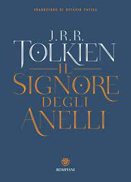
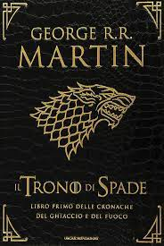
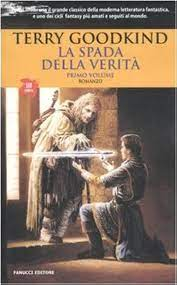
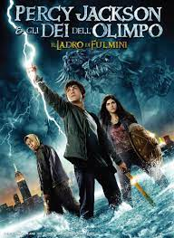
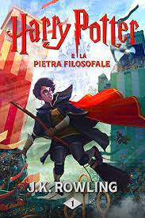

IL SIGNORE DEGLI ANELLI

Il Signore degli Anelli (The Lord of the Rings) è un romanzo epico high fantasy scritto da J. R. R. Tolkien e ambientato alla fine della Terza Era dell'immaginaria Terra di Mezzo. Scritto a più riprese tra il 1937 e il 1949, fu pubblicato in tre volumi tra il 1954 e il 1955 nonché tradotto in trentotto lingue[1] ed ha venduto oltre 150 milioni di copie che lo rendono una delle opere letterarie di maggior successo del XX secolo.
IL TRONO DI SPADE

La storia si svolge in un mondo immaginario composto da due continenti principali, Westeros a occidente ed Essos a oriente, dove la civilizzazione è di tipo feudale e la magia e le creature leggendarie (come i draghi) sono esistite ma si reputa siano scomparse.
LA SPADA DELLA VERITA'

La spada della verità (The Sword of Truth in originale) è il titolo di un ciclo di romanzi sword and sorcery ideato dallo scrittore statunitense Terry Goodkind.È un complesso ciclo fantasy ricco di personaggi con protagonista Richard Cypher, una giovane guida dei boschi che viene coinvolta da una misteriosa donna, Kahlan Amnell, nella ricerca di un grande mago di cui si sono da tempo perse le tracce, Zedd, grande amico di Richard, che successivamente si rivelerà essere suo nonno.
IL DIARIO DI BRIDGET JONES

Il diario di Bridget Jones è un romanzo del 1995 della scrittrice britannica Helen Fielding. Il libro ebbe un grandissimo successo internazionale, e contribuì a fondare un genere estremamente popolare nel decennio successivo, battezzato chick lit ("letteratura per ragazze"). Dal romanzo venne tratto nel 2001 un altrettanto popolare adattamento cinematografico.
PERCY JACKSON E GLI DEI DELL'OLIMPO

Percy Jackson e gli dei dell'Olimpo (nella lingua originale dell'opera: Percy Jackson & The Olympians) è una raccolta letteraria di genere fantasy composta da cinque libri scritti da Rick Riordan.La saga è ambientata negli USA. Il protagonista è un ragazzo di nome Perseus Jackson, da tutti chiamato Percy, che all'età di 12 anni scopre di essere un semidio, figlio della mortale Sally Jackson e di una divinità dell'antica Grecia, Poseidone.
HARRY POTTER E LA PIETRA FILOSOFALE

Harry Potter e la pietra filosofale (titolo originale in inglese: Harry Potter and the Philosopher's Stone) è il primo romanzo della saga high fantasy Harry Potter, scritta da J. K. Rowling e ambientata principalmente nell'immaginario Mondo magico durante gli anni novanta del XX secolo.